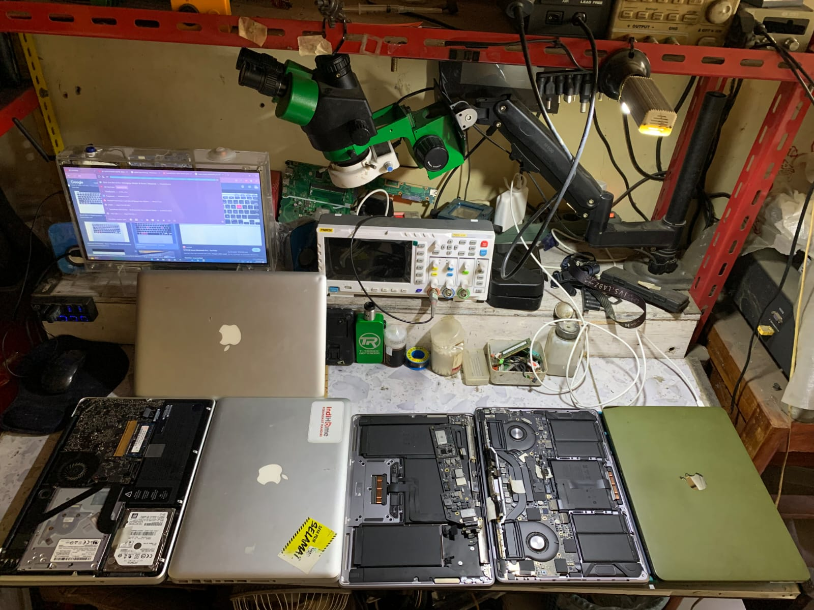

Service MacBook Tasikmalaya
Ditulis oleh Benua Komputer · Spesialis Service Laptop & MacBook Tasikmalaya

MacBook lebih padat & rumit dari laptop Windows, tapi kerusakannya mirip: kena air, tidak nyala, baterai mengembung, atau keyboard tidak berfungsi. Kami melayani service MacBook Tasikmalaya dengan teknisi berpengalaman dan hasil bergaransi.
Keluhan MacBook yang Sering Kami Tangani
- Kena air / teh / kopi (spill) — cuci mainboard & bersih korosi.
- Tidak nyala / mati total — cek IC charger & PMIC.
- Baterai mengembung — ganti baterai original.
- Keyboard tidak jalan / huruf dobel — ganti keyboard set.
- Layar gelap / garis — ganti panel atau flex.
- SSD / logic board — recovery data & service.
MacBook Kena Air? Jangan Lakukan Ini
Yang sering salah: langsung di-charge atau dinyalakan berkali-kali. Sebaiknya matikan, keringkan luar, dan bawa ke teknisi. Semakin cepat ditangani, peluang selamatnya makin besar — mirip prinsip ciri laptop mati total.
Konsultasi gratis
WhatsApp 0821-1475-2228 untuk cek kerusakan & perkiraan biaya MacBook Anda.
Kenapa Service di Benua Komputer?
Kami juga menangani service laptop area Cibeureum dan sekitar Tasikmalaya, dengan suku cadang tersedia dan garansi kerja.
FAQ
MacBook kena air harus bagaimana?
Matikan,
jangan charge, bawa ke teknisi secepatnya.
Berapa lama?
Pembersihan air 1–2 hari,
ganti komponen tergantung ketersediaan part.
Baca juga: 7 Ciri Laptop Harus Di-service · Biaya Ganti Layar Laptop di Tasikmalaya · Biaya Service Laptop
Booking Service Sekarang →